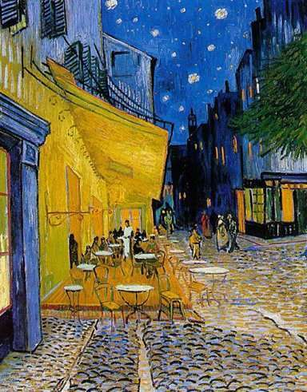
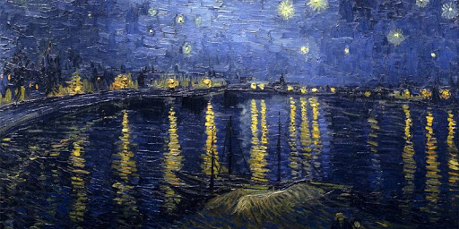

VINCENT VAN GOGH
BIOGRAFIA
Nació el 30 de marzo de 1853. Hijo de un austero y humilde pastor protestante neerlandés llamado Theodorus y de su mujer Anna Cornelia, Vincent recibió el mismo nombre que le habían puesto a un hermano que nació muerto exactamente un año antes. El 1 de mayo de 1857 nació su hermano Theo y ambos tuvieron cuatro hermanos más: Cornelius Vincent, Elisabetha Huberta, Anna Cornelia y Wilhelmina Jacoba. Durante la infancia acudió a la escuela de manera discontinua e irregular, pues sus padres le enviaron a diferentes internados. El primero de ellos en Zevenbergen en 1864, donde estudió francés y alemán.6 Dos años después se matriculó en la escuela secundaria HBS Koning Willem II (Tilburg) viviendo con la familia Hannik en la calle Sint Annaplein 18-19 y permaneció allí hasta que dejó los estudios de manera definitiva a los 15 años.7 Por entonces comenzó su afición por la pintura, aunque durante el resto de su vida se enorgulleció de ser autodidacta.
5 PINTURAS FAVORITAS
LA NOCHE ESTRELLADA
RESEÑA
La noche estrellada es la obra maestra del pintor postimpresionista Vincent Van Gogh. El cuadro lo realizó en el sanatorio de Saint-Rémy-de-Provence, donde se recluyó hacia el final de su vida, a mediados de 1889, trece meses antes de su muerte. Van Gogh usó óleo humedecido y pinceles finos para realizar la obra.

AUTORRETRATO
RESEÑA
El autorretrato de 1889 es un óleo sobre lienzo pintado por el artista postimpresionista Vincent van Gogh. El cuadro, que podría ser el último autorretrato de van Gogh y es el más conocido del artista, fue pintado en septiembre de ese año, poco antes de dejar Saint-Rémy-de-Provence en el sureste de Francia.

TERRAZA DE CAFE POR LA NOCHE
RESEÑA
Terraza de café por la noche es una pintura del neerlandés Vincent van Gogh realizada en Arlés en septiembre de 1888 representando el ambiente de una terraza. En esta pintura Van Gogh expresó sus nuevas impresiones de Francia meridional.
LOS COMEDORES DE PATATAS
RESEÑA
Los comedores de patatas es un cuadro del pintor Vincent van Gogh, que creó en abril de 1885 mientras residía en Nuenen, Países Bajos. Se encuentra en el Museo Van Gogh de Ámsterdam. La versión que se encuentra en el Museo Kröller-Müller de la ciudad de Otterlo es un bosquejo preliminar en óleo.

LA NOCHE ESTRELLADA SOBRE EL RODANO
RESEÑA
Noche estrellada sobre el Ródano es una de las pinturas de Vincent van Gogh de la ciudad de Arlés por la noche. Fue pintado en un lugar en la orilla del Ródano que estaba a solo dos minutos andando de la Casa Amarilla en la plaza Lamartine, que Van Gogh alquilaba en ese tiempo.
